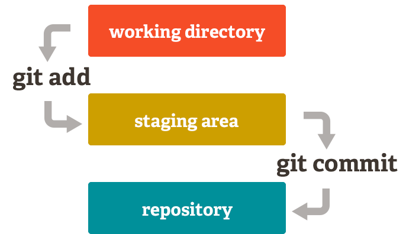
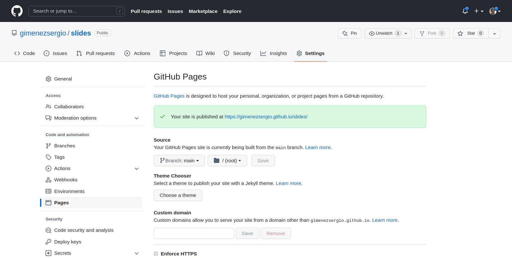

Git y GitHub

Git
- Repositorio/espacio local donde guardar código
- Historial de versiones
- Trabajo en equipo
GitHub

- Plataforma basada en la nube donde los usuarios pueden alojar repositorios Git
- Poner online las páginas estáticas
- Permite centralizar el contenido del repositorio para trabajar en equipo
Configuración global
- git config --global user.name "Sergio Gimenez"
- sergio@dell:~$ git config --global user.email "gimenezsergio123@gmail.com"
- git config --global core.autocrlf input(linux)/true(win)
- git config --list
Areas del estado del código

- Working Directory: Es un archivo modificado pero que aun no se controla, no se sigue, no se le hizo el tracking
- Staging area: Es un archivo modificado y que se le hace tracking
- Repository: Es un archivo confirmado y agregado al repositorio
Crear repositorio nuevo
- git init
- git status (git status -s)
- git add : para agregarlos al stanging area
- git rm –cached {file}
- git commit -m ""
- git log (git log --oneline )
- git ignore (incluir el nombre del archivo a ignorar)
Cuenta en GitHub
https://github.com/
Crear token
Crear desde repositorio existente (GitHub)
- git clone
- http - hss
- git add {file}
- git commit -m ""
- git pull: actualizar a la última versión
GitHub pages - Deploy
